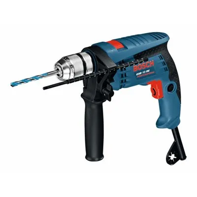

- יצרן:בוש
- סוג מקדחה: רוטטת
- הספק 600W
- מהירות 2800 סל”ד


מקדחה רוטטת דגם GSB 13 RE מבית Bosch. מקדחה רוטטת מקצועית קלת משקל וגודל קומפקטי, מתאימה לביצוע מגוון עבודות בבטון, עץ ומתכת. למקדחה מנוע בהספק של 600 וואט והיא מסוגלת להגיע למהירות של 2,800 סל”ד. אודות לגודל קומפקטי נוחה מאוד לעבודות מדוייקות במקומות עם גישה מוגבלת. לכלי אפשרות לויסות מהירות שעוזרת להתאים את ביצועי הכלי לסוג עבודה. מגיע באריזת קרטון. מספר ספק 1217.192. .